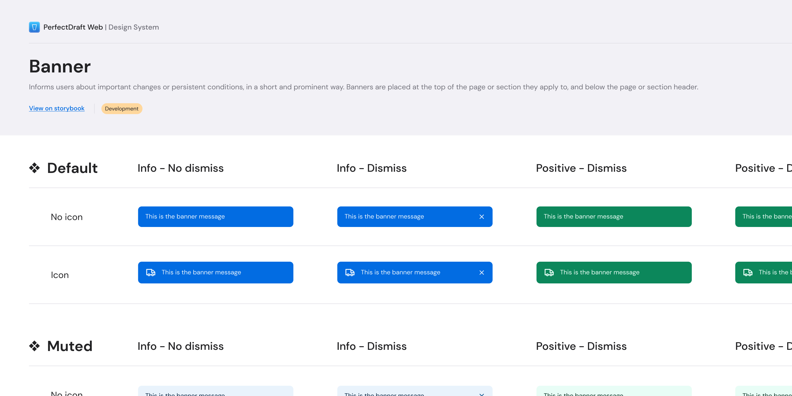
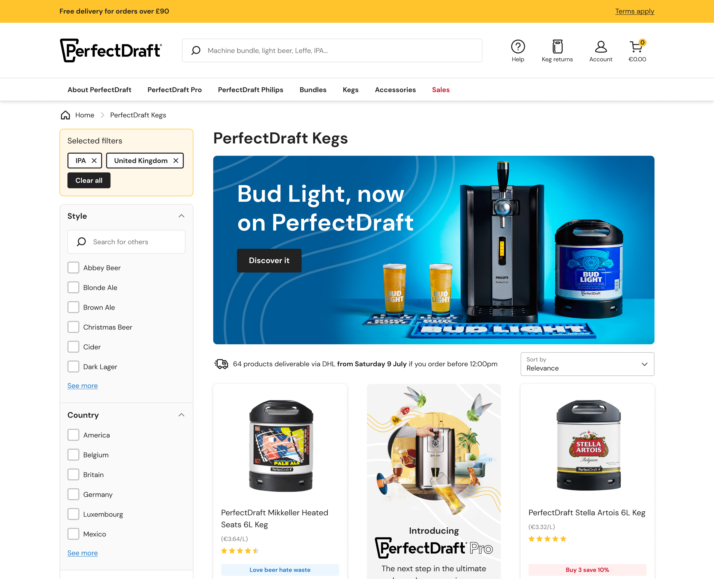
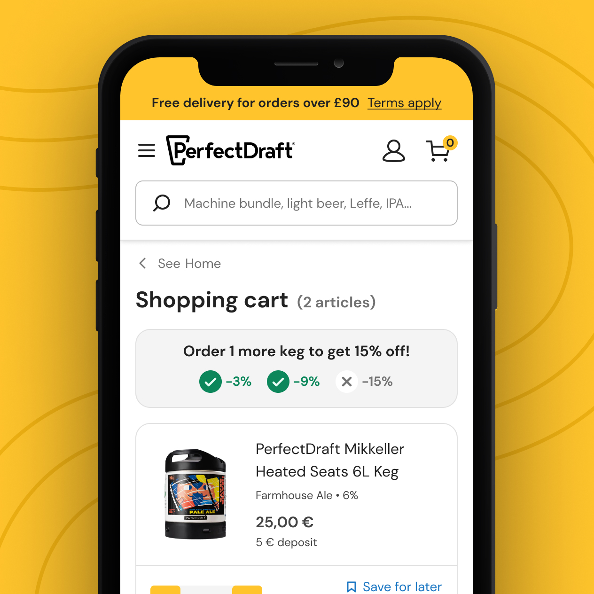
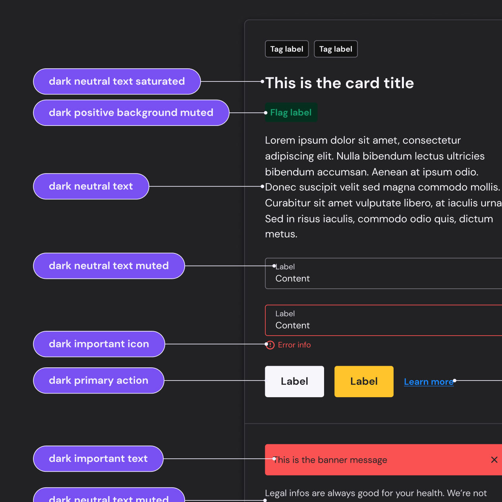

PerfectDraft
- Design System
- UX/UI Design
Establish and apply product design processes and a fully custom design system for the brand's digital products.
As Lead Product Designer, my mission was to support my team in the UI and UX design of the functionalities of PerfectDraft's websites, platforms and mobile app.
In this context, in collaboration with the Lead Frontend Developer, I launched a complete multi-brand design system (which will later be refocused on the convergence of all PerfectDraft brands), and took part in the redesign of all our sites and apps, following the precepts of this design system and drawing on the results of our user research.
Figma example files are available on request.



